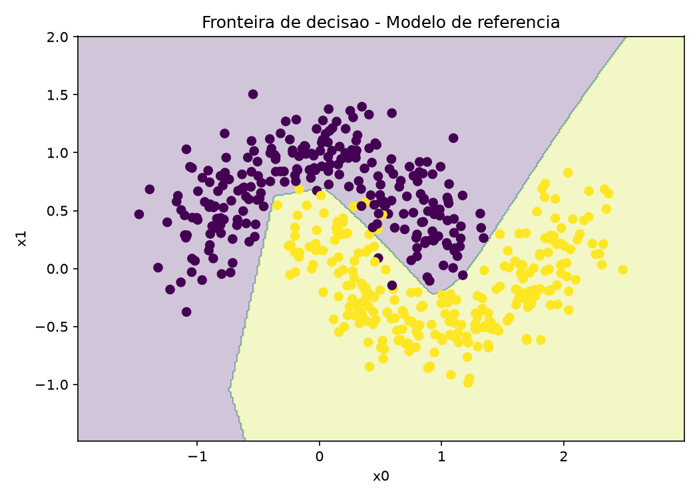
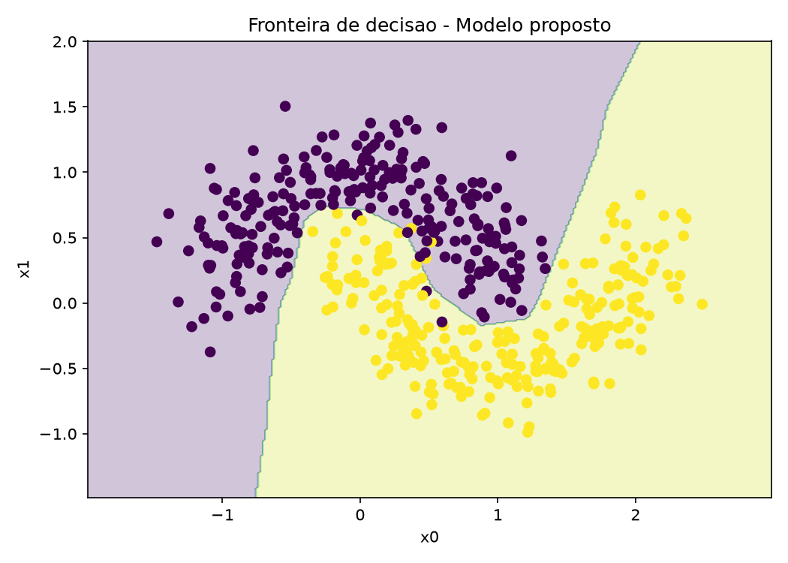

🎤 Fala (~40s): "O trabalho pega a rede Keras do exemplo 4 e pergunta: o que acontece se eu der mais capacidade a ela — mais neurônios e mais uma camada — num problema mais difícil? Tudo o resto foi congelado de propósito, para a diferença vir só da arquitetura."
Slide 2 · Ponto de partida
A referência: exemplo4.py
📊 Dados originais
make_moons(100, noise=0.1) — poucas amostras, pouco ruído
Sem divisão treino/teste: treina e avalia nos mesmos 100 pontos
🎤 Fala (~40s): "A referência é simples de propósito: 100 pontos fáceis e avaliação otimista, porque testa no que treinou. Guarde três coisas: arquitetura 5+5, SGD 0.1 com erro quadrático, e 100 épocas. É isso que vamos alterar — e o que vamos manter."
Regra do experimento: otimizador, loss, lr, dados e seed idênticos para os dois modelos — arquivo src/config.py é a fonte única da verdade.
🎤 Fala (~45s): "Foram três grupos de mudança: dados mais difíceis, treino um pouco mais longo, e a rede maior. E uma decisão importante: SGD, loss e taxa de aprendizado NÃO mudaram — senão eu não saberia se o ganho veio da rede ou do treino."
Slide 4 · O coração da apresentação
Por que cada alteração?
1
100 → 500 amostras + ruído 0.10 → 0.20.Mais pontos = fronteira mais confiável; mais ruído = problema exige curva mais flexível. Sem isso, qualquer rede acertaria tudo e não haveria o que comparar.
2
Split 80/20 estratificado (seed 42).Corrige o viés otimista do exemplo, que testava no treino. Agora acurácia é medida em 100 amostras que a rede nunca viu — comparação honesta.
3
16 → 8 → 4 neurônios (+1 camada).Formato "funil": 1ª camada larga captura detalhes locais das luas, seguintes comprimem em abstração. ~4,4× parâmetros → mais capacidade sem explodir o custo.
4
ReLU, ReLU, tanh (em vez de ReLU, tanh).ReLU nas duas primeiras evita saturação e mantém gradiente vivo (treino com SGD simples); tanh antes da saída dá transição suave e limitada [-1,1] — bom acabamento para a sigmoid binária, que foi mantida porque o problema continua binário.
5
SGD + MSE + lr 0.1 mantidos + 200 épocas / batch 10.Justiça experimental. Épocas e batch só escalaram junto com o dataset (400 treino vs 100) para a rede convergir; o resto é idêntico.
🎤 Fala (~90s — gaste seu tempo aqui): passe item por item resumindo o "para quê" de cada um. Feche com: "Nada foi aleatório: dado mais difícil pede rede maior; avaliação honesta pede split; ativação foi escolhida pelo gradiente."
Slide 5 · Evidência
Resultado: converge 2× mais rápido, acurácia empata
Modelo
Params
Loss teste
Acurácia teste
Referência
51
0.0126
98.00%
Proposto
225
0.0105
99.00%+1 pp
⏱️ Convergência (do histórico, não "no olho")
Loss ≤ 0.02: época 95 → 46 Acurácia ≥ 95%: época 58 → 24 Sem overfitting: loss de teste termina abaixo da de treino nos dois.
🗺️ Fronteira de decisão
Ambas seguem as luas. Diferença só no cruzamento (x0 ∈ [-0.5, 0]): o proposto faz transição mais abrupta — ali mora o ±1 pp.

rode python -m src.trabalho_rede_neural para gerar figuras/'">Referência — fronteira suave

Proposto — transição mais abrupta
🎤 Fala (~60s): "Último run: 98% vs 99% — na prática, 1 amostra em 100. E atenção: esse ±1pp varia entre runs mesmo com seed fixa, por versão de TF/CPU. O efeito robusto é a velocidade: a rede maior atinge o mesmo patamar com metade das épocas. Fonte oficial: resultados/RESULTADOS.md auto-gerado."
Slide 6 · Fechamento
Conclusão: maior ≠ melhor
✅ O que o novo provou
Mais capacidade = convergência ~2× mais rápida sob o mesmo SGD
Ganho final de apenas ~1 pp — a rede simples da aula já era suficiente
Capacidade extra deixa o modelo mais sensível ao ruído na fronteira
Para reproduzir.\.venv\Scripts\python.exe -m src.trabalho_rede_neural → gera figuras/ (7 PNGs) + modelos/ + resultados/
🎤 Fala (~30s): "Moral da história: aumentar neurônios e camadas acelera o treino, mas não garante acurácia melhor — nesse ruído, o simples já resolve. E todo número que mostrei é auditável no CSV por época."
Slide 7 · Cola (não projetar — só para você)
Roteiro de 5 minutos
Tempo
Slide
Falar
0:00–0:40
1 Capa
Pergunta do trabalho + regra: só a arquitetura muda
0:40–1:20
2 Referência
100 pts, sem split, 5+5, SGD 0.1/MSE
1:20–2:05
3 Mapa
3 grupos de mudança (dados, treino, rede)
2:05–3:35
4 Porquês ⭐
1 motivo por item — aqui está a nota
3:35–4:35
5 Resultados
98 vs 99, 2× mais rápido, fronteira no cruzamento
4:35–5:00
6 Conclusão
Maior ≠ melhor + como reproduzir
Dica: se o tempo apertar, pule o slide 3 e vá direto ao 4. Se perguntarem "por que MSE e não cross-entropy?", responda: "para manter fidelidade ao exemplo da aula — trocar a loss contaminaria a comparação."